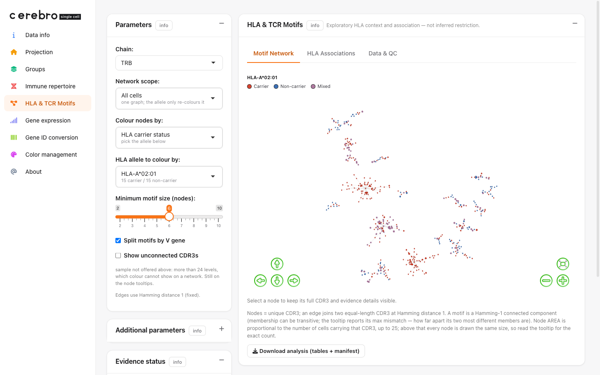

Build a synthetic Seurat object
Setup
library(Matrix)
library(Seurat)
library(CerebroNexus)
set.seed(1) # makes every random step below reproducible
Step 1 — donors and their HLA genotypes
We invent twelve donors, D01–D12.
HLA-A*02:01 is our teaching anchor: we
give it to exactly the first six donors, so later the app opens on a
clean 6-carrier / 6-non-carrier split. DRB1*15:01 is a
class-II anchor carried by the first five.
We store this as a wide table: one row per donor,
two columns per gene (HLA-A_1, HLA-A_2, …),
which is how a genotyping spreadsheet usually looks. Keeping a
donor_id column is what makes the app count at the donor
level.
donors <- sprintf("D%02d", 1:12)
a1 <- c(rep("A*02:01", 6), "A*01:01", "A*03:01", "A*01:01", "A*03:01", "A*11:01", "A*24:02")
a2 <- c("A*01:01", "A*03:01", "A*11:01", "A*24:02", "A*01:01", "A*03:01",
"A*02:01", "A*02:01", "A*03:01", "A*01:01", "A*24:02", "A*11:01")
drb1_1 <- c(rep("DRB1*15:01", 5), "DRB1*03:01", "DRB1*04:01", "DRB1*07:01",
"DRB1*01:01", "DRB1*13:01", "DRB1*11:01", "DRB1*04:01")
drb1_2 <- c("DRB1*03:01", "DRB1*04:01", "DRB1*07:01", "DRB1*01:01", "DRB1*13:01",
"DRB1*15:01", "DRB1*11:01", "DRB1*04:01", "DRB1*03:01", "DRB1*07:01",
"DRB1*01:01", "DRB1*13:01")
hla_wide <- data.frame(
sample = donors,
donor_id = donors,
"HLA-A_1" = a1, "HLA-A_2" = a2,
"HLA-B_1" = rep(c("B*07:02", "B*08:01"), 6),
"HLA-B_2" = rep(c("B*44:02", "B*35:01"), 6),
"HLA-C_1" = rep(c("C*07:01", "C*05:01"), 6),
"HLA-C_2" = rep(c("C*04:01", "C*06:02"), 6),
"HLA-DRB1_1" = drb1_1, "HLA-DRB1_2" = drb1_2,
check.names = FALSE, stringsAsFactors = FALSE
)
Look at what you built — one row per donor, the
first few columns:
head(hla_wide[, 1:6], 4)
#> sample donor_id HLA-A_1 HLA-A_2 HLA-B_1 HLA-B_2
#> 1 D01 D01 A*02:01 A*01:01 B*07:02 B*44:02
#> 2 D02 D02 A*02:01 A*03:01 B*08:01 B*35:01
#> 3 D03 D03 A*02:01 A*11:01 B*07:02 B*44:02
#> 4 D04 D04 A*02:01 A*24:02 B*08:01 B*35:01
#> dim(hla_wide): 12 rows x 10 columns
Notice the first four donors all carry A*02:01 in one of
their two HLA-A slots — that is the anchor doing its
job.
Two things that trip people up:
check.names = FALSE is mandatory. R’s default would
silently rename HLA-A_1 to HLA.A_1, and the
reader matches columns on the literal text HLA-, so the
rename makes every allele “disappear”.- Only the genes
HLA-A, HLA-B,
HLA-C, HLA-DRB1 are offered in the app. DQ and
DP are two-chain molecules that need extra pairing rules, so they are
stored but not shown in the allele pickers.
Step 2 — one row per cell
Now the cells: one sample per donor, sixty cells each (720 in total),
split into five cell types. We put the class-I story in CD8 T cells and
the class-II story in CD4 T / Treg, which keeps the biology
self-consistent later.
comp <- c(`CD8 T` = 24, `CD4 T` = 20, Treg = 6, B = 6, Mono = 4) # 60 cells / donor
meta <- do.call(rbind, lapply(donors, function(d) {
data.frame(sample = d, cell_type = rep(names(comp), comp), stringsAsFactors = FALSE)
}))
meta$barcode <- sprintf("%s_%04d", meta$sample, seq_len(nrow(meta)))
rownames(meta) <- meta$barcode
Look at what you built — a plain cell table plus the
overall composition:
head(meta, 3)
table(meta$cell_type)
#> sample cell_type barcode
#> D01_0001 D01 CD8 T D01_0001
#> D01_0002 D01 CD8 T D01_0002
#> D01_0003 D01 CD8 T D01_0003
#>
#> B CD4 T CD8 T Mono Treg
#> 72 240 288 48 72
Every cell has a unique barcode; that barcode is the key
everything else joins on.
Step 3 — a minimal expression matrix and Seurat object
The HLA page needs no gene-expression at all, but a Cerebro data set
expects a matrix and one 2-D projection, and the Gene expression tab is
friendlier if a few real gene symbols are searchable. So we fake Poisson
counts, bump each cell type’s own markers, and attach a toy UMAP by hand
— no real clustering run is required.
markers <- c("CD8A", "CD8B", "CD3D", "CD4", "IL7R", "FOXP3", "IL2RA",
"MS4A1", "CD79A", "CD14", "LYZ")
genes <- c(markers, sprintf("GENE%04d", seq_len(600 - length(markers))))
counts <- matrix(rpois(length(genes) * nrow(meta), lambda = 0.2),
nrow = length(genes), dimnames = list(genes, meta$barcode))
# lift each cell type's own markers so the types separate in the toy UMAP
lift <- list(`CD8 T` = c("CD8A", "CD8B", "CD3D"), `CD4 T` = c("CD4", "IL7R", "CD3D"),
Treg = c("FOXP3", "IL2RA", "CD3D"), B = c("MS4A1", "CD79A"),
Mono = c("CD14", "LYZ"))
for (ct in names(lift)) {
cols <- which(meta$cell_type == ct)
counts[lift[[ct]], cols] <- counts[lift[[ct]], cols] +
rpois(length(lift[[ct]]) * length(cols), lambda = 8)
}
counts <- as(counts, "CsparseMatrix")
seurat <- CreateSeuratObject(counts = counts, meta.data = meta)
seurat <- NormalizeData(seurat, verbose = FALSE)
# a toy 2-D embedding: one Gaussian blob per cell type
centres <- rbind(`CD8 T` = c(-5, 4), `CD4 T` = c(5, 4), Treg = c(6, -3),
B = c(-6, -4), Mono = c(0, -6))
emb <- centres[meta$cell_type, ] + matrix(rnorm(nrow(meta) * 2, sd = 0.8), ncol = 2)
colnames(emb) <- c("UMAP_1", "UMAP_2"); rownames(emb) <- meta$barcode
seurat[["umap"]] <- CreateDimReducObject(embeddings = emb, key = "UMAP_", assay = "RNA")
# exportFromSeurat reads nUMI / nGene columns by default; provide them
seurat$nUMI <- seurat$nCount_RNA
seurat$nGene <- seurat$nFeature_RNA
At this point seurat is an ordinary Seurat object with
600 genes, 720 cells, a umap reduction, and our
sample / cell_type labels — nothing
HLA-specific yet.
Step 4 — the receptors, with motif families designed in
This is the heart of the demo, so we go slowly.
A motif family is a set of CDR3s that are all one
edit apart. We grow one with a branching walk: start from a
random CDR3, then repeatedly pick an existing member and change a single
interior letter. Because each new member is one edit from its parent,
the whole family is automatically Hamming-1 connected.
AA <- strsplit("ACDEFGHIKLMNPQRSTVWY", "")[[1]] # the 20 amino acids
rand_cdr3 <- function(len) paste0("CASS", paste(sample(AA, len - 5, TRUE), collapse = ""), "F")
make_family <- function(n, len = 15) {
members <- rand_cdr3(len)
while (length(members) < n) {
base <- members[sample.int(length(members), 1)] # pick an existing member
chars <- strsplit(base, "")[[1]]
pos <- sample(5:(len - 1), 1) # choose an interior position
chars[pos] <- sample(setdiff(AA, chars[pos]), 1) # mutate it
cand <- paste(chars, collapse = "")
if (!cand %in% members) members <- c(members, cand)
}
members
}
See a family — one call returns a clump of
near-identical CDR3s (each differs from an earlier one by a single amino
acid, shown in bold):
make_family(6)
#> CASSQLHKRFKQF F F
#> CASSQLHKRFKQF P F <- last-but-one letter F -> P
#> CASS D LHKRFKQFFF <- position 5 Q -> D
#> CASSQLHKRFKQF L F <- last-but-one letter F -> L
#> CASSQLH P RFKQFPF <- position 8 K -> P
#> CASSQLHKRF G QFFF <- position 11 K -> G
(The exact letters are random, so you will get different sequences —
but they will always form a one-edit-apart family.)
Now we place six such families onto cells. Families 1–4 live in the
CD8 T cells of HLA-A*02:01 carriers (a class-I story);
family 5 lives in the CD4 T cells of DRB1*15:01 carriers
(class II); family 6 is scattered over random donors so it will come out
“Mixed”. Each family gets its own V gene so the page’s
split-by-V option keeps them apart.
fam_spec <- list(
list(size = 12, v = "TRBV20-1", lineage = "CD8 T", donors = donors[1:6]),
list(size = 10, v = "TRBV28", lineage = "CD8 T", donors = donors[1:6]),
list(size = 9, v = "TRBV19", lineage = "CD8 T", donors = donors[1:6]),
list(size = 8, v = "TRBV7-9", lineage = "CD8 T", donors = donors[1:6]),
list(size = 8, v = "TRBV5-1", lineage = "CD4 T", donors = donors[1:5]),
list(size = 7, v = "TRBV9", lineage = "CD4 T", donors = donors[c(3, 7, 9, 11)])
)
# eligible cells (T cells, ~90% receptor coverage), drawn from a per-(donor, lineage) pool
t_meta <- meta[meta$cell_type %in% c("CD8 T", "CD4 T", "Treg"), ]
t_meta <- t_meta[runif(nrow(t_meta)) < 0.90, ]
pool <- split(t_meta$barcode, list(t_meta$sample, t_meta$cell_type), drop = TRUE)
take <- function(donor, lineage) { # hand out one free cell, then remove it
key <- paste(donor, lineage, sep = ".")
if (is.null(pool[[key]]) || length(pool[[key]]) == 0) return(NA_character_)
bc <- pool[[key]][1]; pool[[key]] <<- pool[[key]][-1]; bc
}
assign <- data.frame(barcode = character(), v_gene = character(), cdr3 = character())
for (fs in fam_spec) {
cdr3s <- make_family(fs$size)
for (i in seq_along(cdr3s)) {
d <- fs$donors[(i - 1) %% length(fs$donors) + 1]
bc <- take(d, fs$lineage)
if (!is.na(bc)) assign <- rbind(assign, data.frame(barcode = bc, v_gene = fs$v, cdr3 = cdr3s[i]))
}
}
# every other T cell with a receptor gets a random singleton — the polyclonal background
bg <- setdiff(t_meta$barcode, assign$barcode)
assign <- rbind(assign, data.frame(
barcode = bg,
v_gene = sample(sprintf("TRBV%d-1", 2:29), length(bg), TRUE),
cdr3 = vapply(sample(12:17, length(bg), TRUE), rand_cdr3, character(1))
))
The last move is to pack these assignments into the shape
scRepertoire (and therefore the page) expects. Each chain
of a cell is one underscore-joined slot, and within a chain the
gene names are dot-joined as V.J.C; the CDR3 amino acids
live in a parallel CTaa string. Here every cell has a
single TRB chain:
tcr <- merge(assign, meta[, c("barcode", "sample")], by = "barcode")
tcr$CTgene <- sprintf("%s.TRBJ2-7.TRBC2", tcr$v_gene) # V.J.C
tcr$CTaa <- tcr$cdr3 # the CDR3 amino acids
tcr$CTnt <- NA_character_
tcr$CTstrict <- sprintf("%s;%s", tcr$v_gene, tcr$cdr3)
ir_cols <- c("barcode", "CTgene", "CTnt", "CTaa", "CTstrict")
ir_data <- lapply(split(tcr, tcr$sample), function(df) df[, ir_cols, drop = FALSE])
Look at what you built — a named list, one table per
sample, holding five columns:
names(ir_data) # one entry per donor
head(ir_data[["D01"]], 3)
#> [1] "D01" "D02" "D03" ... "D12"
#>
#> barcode CTgene CTnt CTaa CTstrict
#> D01_0001 TRBV20-1.TRBJ2-7.TRBC2 <NA> CASSFIHAHWQQEVF TRBV20-1;CASSFIHAHWQQEVF
#> D01_0003 TRBV20-1.TRBJ2-7.TRBC2 <NA> CASSFIFAHWQHFVF TRBV20-1;CASSFIFAHWQHFVF
#> D01_0004 TRBV28.TRBJ2-7.TRBC2 <NA> CASSWMDCEPRHFWF TRBV28;CASSWMDCEPRHFWF
See how the page will read this: from CTgene it splits
out the V gene (TRBV20-1), and from CTaa it
takes the CDR3. The first two rows are the same family —
CASSFIHAHWQQEVF and CASSFIFAHWQHFVF are a
couple of edits apart — which is exactly the structure the motif network
will draw.
Step 5 — attach the contracts and export
Attach the repertoire through its checked API, add the two HLA
fields, and export. This is the moment the plain Seurat object becomes
an HLA-aware Cerebro file.
seurat <- addImmuneRepertoire(seurat, tcr = ir_data)
seurat@misc$hla_typing <- hla_wide
seurat@misc$hla_typing_source_type <- "synthetic" # be honest about provenance
exportFromSeurat(
seurat,
file = "demo_hla_tcr_toy.crb",
experiment_name = "toy_hla_tcr",
organism = "hg",
groups = c("sample", "cell_type")
)
That writes a ~200 KB .crb. You can inspect it without
opening the app, and this is where you feel the transformation
the export performed. The wide genotype table you wrote in Step 1 has
become a tidy long table — one row per donor × gene ×
copy — with the HLA- prefix normalised back on and
provenance stamped:
crb <- readRDS("demo_hla_tcr_toy.crb")
head(crb$getHLATyping()[, c("sample", "donor_id", "locus", "copy", "allele", "source_type")], 4)
#> sample donor_id locus copy allele source_type
#> D01 D01 HLA-A 1 HLA-A*02:01 synthetic
#> D02 D02 HLA-A 1 HLA-A*02:01 synthetic
#> D03 D03 HLA-A 1 HLA-A*02:01 synthetic
#> D04 D04 HLA-A 1 HLA-A*02:01 synthetic
Notice A*02:01 came back as HLA-A*02:01:
the app normalises whatever spelling you feed it. And the receptors
really do form a network:
seg <- CerebroNexus:::hla_parse_ir_segments(crb$immune_repertoire, "TRB")
g <- CerebroNexus:::hla_build_motif_graph(seg, by_v = TRUE, min_nodes = 6)
c(nodes = igraph::gorder(g), edges = igraph::gsize(g), families = igraph::components(g)$no)
#> nodes edges families
#> 54 49 6
Fifty-four CDR3s, forty-nine one-edit links, six families — the six
we designed.
Using the page
The page has a parameter column on the left and three tabs on the
right: Motif Network, HLA
Associations, and Data & QC.
Motif Network

The motif network, coloured by motif cluster.
Each dot is a unique CDR3; edges join one-edit neighbours; a connected
clump is a motif family. The six families we designed stand out from the
sparse background.
The controls, top to bottom:
- Chain — TRB here; TRA also appears when the data
carries it.
- Network scope — All cells builds one graph
and the allele only re-colours it, so a colour change never rebuilds
(and never re-arranges) the network.
- Colour nodes by — motif cluster, cell type, MHC
context, HLA carrier status, or sample of origin.
- Minimum motif size — hides clumps smaller than the
slider (default 6), which sweeps away the polyclonal singletons and
leaves the designed families.
- Split motifs by V gene — treats CDR3s that use
different V genes as different receptors.
Colouring by HLA carrier status is the view the page
exists for. Pick the anchor allele and every dot becomes Carrier (only
carriers of that allele have this CDR3), Non-carrier, or Mixed:

Carrier-status colouring on HLA-A*02:01 (15
carriers vs 15 non-carriers in the shipped fixture). The designed
families light up as solid red carrier islands against a mixed
background.
Because family members are mostly private to one donor, an ordinary
background dot just inherits its single donor’s status, so the
background is naturally a red/blue mix. The signal you read is a
solid carrier island standing out from that mix — not “red
versus grey”. “Mixed” appears only for a CDR3 shared across donors on
both sides of the allele.
HLA Associations

The HLA Associations tab. The orange banner
declares the data is a fabricated fixture; the table shows how the
locked feature co-occurs with carriers vs. non-carriers.
This tab is descriptive only — no p-value, no
restriction claim. You lock a feature (a whole motif or
a single CDR3), pick an allele, and read how often
carriers, non-carriers, and untyped donors show that feature. The orange
banner is triggered by
hla_typing_source_type = "synthetic": because we invented
both the sequences and the genotypes, any contrast here was placed there
on purpose. The blue banner reminds you that counts are donor-level
(when donor mapping is complete) and that the feature is measured on the
global graph regardless of the network scope.
Data & QC

The Data & QC tab: per-donor coverage, the
normalized typing table, and a session-only upload to override the
stored HLA typing.
This tab shows what the app actually parsed: how many alleles each
donor has, the normalized long typing table, and the sample →
analysis-unit mapping. You can also upload your own HLA
typing here (CSV or TSV, long or wide) to override the stored genotypes
for the session — handy when a .crb shipped without typing.
Uploads never modify the .crb, and “Download CSV template”
gives you the exact expected shape.
Bringing your own single-cell data
The walkthrough above invented every input so it would run
with no downloads. In real work you already have these pieces from your
own pipeline — you only need to reshape them into the three
@misc slots and export. Nothing here is HLA-specific magic;
it is the ordinary Cerebro export plus the checked repertoire call and
two HLA fields.
You are typically starting from:
| a Seurat object (clusters, a UMAP, cell types) |
your scRNA-seq pipeline |
the .crb itself, via
exportFromSeurat() |
| paired TCR / VDJ |
Cell Ranger filtered_contig_annotations.csv →
scRepertoire combineTCR() |
@misc$immune_repertoire |
| each donor’s HLA genotype |
a genotyping lab report, or HLA imputed from the same reads |
@misc$hla_typing |
1 — your Seurat object
Whatever produced the object is fine. The HLA page needs only that it
has cells with barcodes, a sample (donor) column in
@meta.data, and ideally a cell_type column and
a UMAP. If you can already export it to Cerebro today, you are set; the
two slots below are the only additions.
seurat # e.g. 20,000 cells, an RNA/SCT assay, a umap reduction
head(seurat@meta.data[, c("sample", "cell_type")])
The column that matters for HLA counting is sample: it
is the key that joins a cell to its donor’s genotype, so the
sample values in @meta.data must match the
sample values in your HLA table. If one donor
contributed several 10x lanes, collapse them to one sample
/ donor_id per person — otherwise carrier counts
double-count that donor.
2 — receptors from Cell Ranger + scRepertoire
If you ran 10x 5’ VDJ, Cell Ranger writes one
filtered_contig_annotations.csv per sample. scRepertoire’s
combineTCR() turns those into exactly the per-sample list
of CTgene / CTaa / CTnt /
CTstrict tables Cerebro stores — so its output is
the immune_repertoire slot, with no reshaping:
library(scRepertoire)
contig_list <- lapply(sample_dirs, function(d) {
read.csv(file.path(d, "filtered_contig_annotations.csv"))
})
combined <- combineTCR(contig_list, samples = donor_ids) # a list named by donor
seurat <- addImmuneRepertoire(seurat, tcr = combined)
addImmuneRepertoire() also takes the contig files
directly, doing the combineTCR() step for you:
seurat <- addImmuneRepertoire(
seurat,
tcr = file.path(sample_dirs, "filtered_contig_annotations.csv"),
sample_names = donor_ids
)
The page reads two things out of each row: the V gene (the first
dot-separated token of CTgene) and the CDR3 amino acids
(CTaa). Everything else is carried through untouched. Watch
the barcodes: if combineTCR(samples =) prefixes them
(donorA_AACCTGA-1), the same prefix must be on the
@meta.data barcodes (via RenameCells).
addImmuneRepertoire() stops with that mismatch instead of
storing an empty join. The companion Immune Repertoire Analysis
vignette walks the full scRepertoire path.
3 — HLA typing: genotyped or imputed
Your genotypes come from one of two honest sources, and the app asks
you to say which — this is what stamps source_type and
keeps a prediction from being mistaken for a lab call:
genotyped — a real HLA typing assay
(sequence-based typing, NGS typing, or an array the lab called into
alleles). Only this source is eligible for confirmatory downstream
claims.imputed — alleles predicted from data:
arcasHLA / OptiType / HLA-HD run
on the same RNA or exome reads, or SNP-array imputation. Fine for
exploration; the app labels it so the uncertainty travels with the
result.
The table can be the wide shape a spreadsheet
exports (one row per donor, two columns per gene) …
hla_wide <- read.csv("my_hla_typing.csv", check.names = FALSE) # check.names is mandatory
head(hla_wide)
#> sample HLA-A_1 HLA-A_2 HLA-B_1 HLA-B_2 HLA-C_1 HLA-C_2 HLA-DRB1_1 HLA-DRB1_2
#> donorA A*02:01 A*01:01 B*07:02 B*44:02 C*07:01 C*05:01 DRB1*15:01 DRB1*03:01
#> donorB A*03:01 A*24:02 B*08:01 B*35:01 C*04:01 C*06:02 DRB1*04:01 DRB1*07:01
… or the long shape (one row per donor × gene ×
copy) if that is what your lab delivers. Either is accepted. Attach it
and record where it came from:
seurat@misc$hla_typing <- hla_wide
seurat@misc$hla_typing_source_type <- "genotyped" # or "imputed"
check.names = FALSE is mandatory: R’s default renames
HLA-A_1 to HLA.A_1, and the reader matches on
the literal HLA-, so the rename makes every allele vanish
silently. Only HLA-A, -B, -C,
-DRB1 are shown in the allele pickers (DQ / DP need
heterodimer pairing and are stored but not interpreted). Allele spelling
is normalised for you — A*02:01, HLA-A*02:01,
and A0201-style strings all resolve to the same allele.
4 — export
The same call as any Cerebro export; the three slots ride along:
exportFromSeurat(
seurat,
file = "my_study.crb",
experiment_name = "my_study",
organism = "hg",
groups = c("sample", "cell_type")
)
Then launchCerebro(crb_file_to_load = "my_study.crb"),
or wrap a shareable bundle with createShinyApp(). The
HLA & TCR Motifs item appears whenever the object
carries a TRA/TRB chain; HLA typing is optional.
No genotypes yet? Ship the .crb with
just the receptors. The page still draws the motif network, and a
collaborator can upload an HLA CSV/TSV in the Data &
QC tab for their session — no rebuild, and the
.crb is never modified.